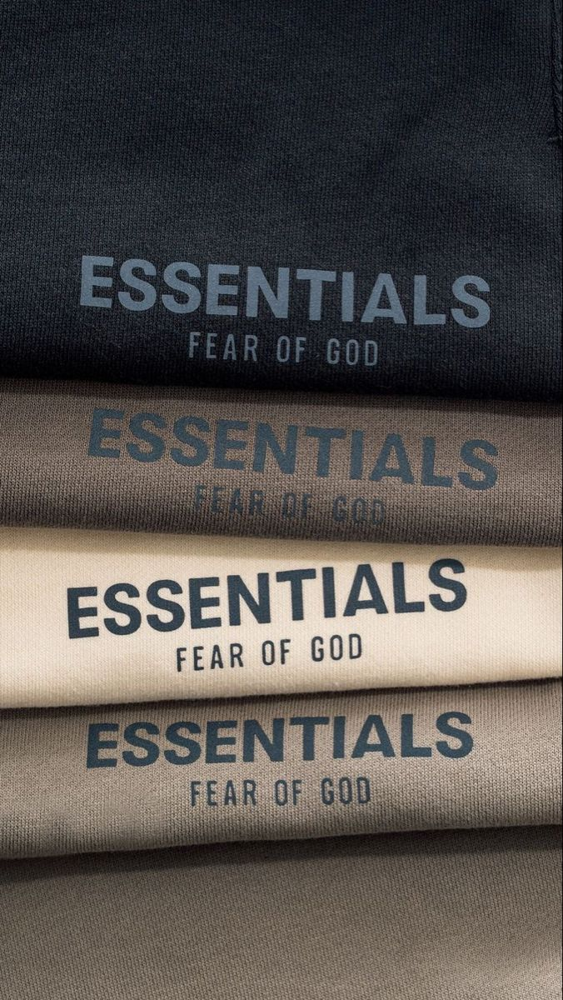
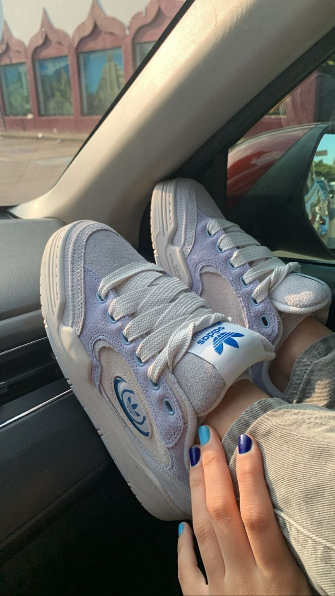
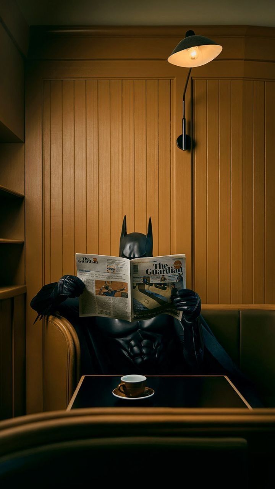

Resurgimiento de la Moda Retro
Hoy en día, la moda retro ha experimentado un emocionante resurgimiento que ha capturado la imaginación de fashionistas de todo el mundo. Desde estilos de los años 60 y 70 hasta los vibrantes looks de los 80 y 90, la moda retro ha dejado una marca indeleble en las pasarelas y las calles. Diseñadores y marcas líderes han abrazado la nostalgia, reintroduciendo siluetas clásicas, patrones vintage y colores retro en sus colecciones. Este renacer no solo celebra la historia de la moda, sino que también ofrece a la generación actual la oportunidad de reinterpretar y personalizar estilos del pasado.

Influencia en la Cultura Pop y Digital
a moda retro no solo se ha apoderado de la industria de la moda, sino que también ha influido en la cultura pop y digital. Las redes sociales han desempeñado un papel crucial al permitir a los amantes de la moda compartir y descubrir inspiración retro, creando una comunidad global que celebra el estilo vintage. Además, películas y programas de televisión ambientados en décadas pasadas han contribuido a revitalizar la estética retro, llevando a que se busquen y adopten prendas que rinden homenaje a épocas anteriores.

Sostenibilidad y Conciencia Social
La moda retro contemporánea también se ha alineado con la creciente conciencia de la sostenibilidad. La preferencia por prendas de segunda mano, la reutilización de diseños clásicos y la búsqueda de estilos duraderos han impulsado una tendencia hacia una moda más sostenible. Al rescatar y dar nueva vida a piezas vintage, los amantes de la moda retro contribuyen a la reducción del desperdicio y fomentan un enfoque más consciente en la forma en que consumimos y apreciamos la moda. Este movimiento no solo refleja una preferencia estilística, sino también una conexión más profunda con la historia y el impacto ambiental de la moda.
